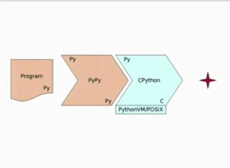

State of Python
Contents
- Python
- Reference Implementation
- CPython Release Schedule
- Python3 Progress
- Python Launcher for Windows (PEP 397)
- Faulthandler module
- Framework Supports
- Jython
- Java and Jython
- Why Jython
- Jython's features
- Java Introspection
- Subclassing java
- How is Jython doing?
- Jython Platform Support
- Performance
- IronPython
- Features
- Installation
- Why should you be interested?
- Example code
- FrameWork Support
- Example Applications
- PyPy
- PyPy Architecture
- PyPy Architecture
- PyPy Architecture
- Release
- Framework Compatiblity
- Performance
- Speed,Speed,Speed
- GIL
- The Future
Python
- Python as a language reference separate from implementation.
- CPython is only one of the implementation
- PyPy, Jython, IronPython, CLPython.
- Implementation in another language that you can write.
Reference Implementation
- CPython implemented in C.
- Widely known as Python
- BDFL overlooks the development and process.
- Mercurial Repository - http://hg.python.org
CPython Release Schedule
Process
alphas, betas, rc1, rc2 and release!
| Release | Date | RM |
|---|---|---|
| 3.3 | Mar-Aug, 2012 | Georg Brandl |
| 3.2.2 | Aug, 2011 | Georg Brandl |
| 2.7.2 | June, 2011 | Benjamin Peterson |
| 3.1.4 | June, 2011 | Benjamin Peterson |
| 2.6.7 | June, 2011 | Barry Warsaw |
- Windows Installers by Martin and Mac Installers by Ronald or Ned Deily.
Python3 Progress


- Breaking from it's roots.
- Moving away from it's C Background.
- Modern Frameworks and Advanced Applications.
- Taking good points from Java and others.
- Fixing a lot of Language warts.
Python Launcher for Windows (PEP 397)
- Proposal by Mark Hammond and Implemented by Vinay Sajip.
- Python scripts (.py and .pyw files) get associted with Python2/3.
- "shebang" line on Windows.
- Will be distributed with Windows Installers.
- Download - https://bitbucket.org/vinay.sajip/pylauncher/
- The shebang concept is decribed in man 2 execve
- http://www.python.org/dev/peps/pep-0397/
Faulthandler module
- Implemented by Victor Stinner
- Functions to dump Python Traceback explictly, fault, user signal or timeout.
- Can be Enabled for SIGSEGV, SIGFPE, SIGABRT, SIGBUS and SIGILL
- PYTHONFAULTHANDLER or using -X faulthandler
- Implemented in C, tracebacks can be dumped on a crash or when Python is deadlocked.
- http://docs.python.org/dev/library/faulthandler.html
- Compatible with Apport or Windows Default Fault Handler.
- Use alternative stacks, if signalstack() is available to dump traceback even on StackOverflow.
Framework Supports
- Numpy Supports
- Support not fast in WebFramework world because of the need to sort out WSGI spec.
- Closing the gap of 2.7 and 3.x will help migrate faster.
- Distribute (fork of setuptools) has support.
- For many cases, the migration will be easy with on the fly 3 coversion with use2to3=True flag.
- Support is steady and moving forward and will target 3.2 or 3.3.
Jython

- Implementation written in Java.
- The language syntax and semantics will be same as Python.
- http://hg.python.org/jython/
Java and Jython
- Seamlessly integrated with Java and import and use any Java class.
- Except for some standard modules, Jython programs use Java classes instead of Python modules.
>>> from java.lang import System >>> props = System.getProperties()
Why Jython
- You are from the Java world and do not want to feel away from home.
- Dynamic compilation to Java bytecodes.
- Ability to extend existing Java classes in Jython.
- Optional static compilation - Applets, Servlets and beans
- You are Python programmer and You want to learn Java
Jython's features
- Prototyping (using Java semantics)
- Java investigation of classes.
- Glues together libraries already written in Java.
- Runs on any JVM above 1.1
- Truly multi-threaded (no GIL) and Java garbage collected.
- It is all about concurrency. Its dicts are built on top of Java's ConcurrentHashMap.
Java Introspection
>>> from java.util import Date >>> d = Date() >>> print d Fri Jun 10 09:08:58 SGT 2011 >>> import sys >>> sys.path # [..,'__classpath__', ... ]
Subclassing java
from java import awt
class SpamListener(awt.event.ActionListener):
def actionPerformed(self,event):
if event.getActionCommand() == "Spam":
print 'Spam and eggs!'
f = awt.Frame("Subclassing Example")
b = awt.Button("Spam")
b.addActionListener(SpamListener())
f.add(b, "Center")
f.pack()
f.setVisible(1)
# Use of javax swing:
from javax.swing import *
def hello(event):
print "Hello, world!"
frame = JFrame("Hello Jython")
button = JButton("Hello", actionPerformed = hello)
frame.add(button)
frame.setDefaultCloseOperation(JFrame.EXIT_ON_CLOSE)
frame.setSize(300, 300)
frame.show()
How is Jython doing?
- Current Jython is compatible with CPython reference implementation 2.5.2
- hg version targets 2.6
- Supports Popular Python frameworks such as Django, Pylons, or SQLAlchemy.
- Scripting support in Oracle WebLogic and IBM Websphere application server.
- ZK Java Ajax Framework Support.
- virtualenv, easy_install
Jython Platform Support
- apt-get install jython
- Or Download and java -jar jython-2.5.2.jar
- On All platforms which support Java Standard Edition.
- Not Java Mobile Edition, so not for Android.
Performance
Performance to CPython is comparable to slower in general. Multi-threaded applications can be faster.
The good news is, it is not just an extension language, but complete programming language suitable for application development.
IronPython
IronPython is an implementation of the Python programming language targeting the .NET Framework and Mono.
IronPython is an excellent addition to the .NET Framework, providing Python developers with the power of the .NET framework. Existing .NET developers can also use IronPython as a fast and expressive scripting language for embedding, testing, or writing a new application from scratch.
The CLR is a great platform for creating programming languages, and the DLR makes it all the better for dynamic languages. Also, the .NET framework (base class library, presentation foundation, Silverlight, etc.) gives developers an amazing amount of functionality and power.
Features
- IronPython can use the .NET Framework and Python libraries, and other .NET languages can use Python code just as easily.
- Release 2.7 was released on March 12, 2011 and it targets CPython 2.7.
Installation
- IronPython 2.7 installer available for Windows Platform, as Desktop and Server Apps.
- Pre-requisite include .NET 4.0 or Silverlight 4.
- Also supports Browser apps development via Silverlight - Browser App for Mac and Windows.
- via Mono - desktop app for Linux and Mac.
- via Moonlight plugin - as browser app for Linux.
Why should you be interested?
- Corporate credibility, when your company uses .Net technologies.
- No GlobalInterpreterLock - IronPython has no GIL and multi-threaded code can use multi core processors
- The .NET framework library is very big. Windows Forms support.
- Easier to extend than CPython (C# is memory managed and C# types can be used directly in IronPython with no wrapping)
- An extensibility layer to application frameworks written in a .NET language.
- Silverlight!
Example code
import clr
clr.AddReference("System.Windows.Forms")
from System.Windows.Forms import MessageBox
MessageBox.Show("Hello World")
Example Applications
- http://ironpython.net/try
- SilverLight Example Applications
- The Microsoft Robotics Kit
- XNA: 3D and Games Programming Framework
PyPy
PyPy is a Python Interpreter written in Python and it is a JIT Compiler. It focusses on Speed, Efficiency and 100% CPython compatibility.
- It is just your normal pure python code!
- Just run your existing pure python code against pypy interpreter.
What is a Just in Time Compiler
In the beginning, a compiler was responsible for turning a high-level language (defined as higher level than assembler) into object code (machine instructions), which would then be linked (by a linker) into an executable.
At one point in the evolution of languages, compilers would compile a high-level language into pseudo-code, which would then be interpreted (by an interpreter) to run your program. This eliminated the object code and executables, and allowed these languages to be portable to multiple operating systems and hardware platforms. Pascal (which compiled to P-Code) was one of the first; Java and C# are more recent examples. Eventually the term P-Code was replaced with bytecode, since most of the pseudo-operations are a byte long.
A Just-In-Time (JIT) compiler is a feature of the run-time interpreter, that instead of interpreting bytecode every time a method is invoked, will compile the bytecode into the machine code instructions of the running machine, and then invoke this object code instead. Ideally the efficiency of running object code will overcome the inefficiency of recompiling the program every time it runs.
Details of PyPy
Pypy includes a RPython translation toolchain, which translates RPython code to C code.PyPy is a framework for generating dynamic language implementations. PyPy is, in a sense, a toolbox for the creation of just-in-time compilers for dynamic languages; Python is just the start - but it's an interesting start.
PyPy is ready for prime time; it implements the (Python 2.x) language faithfully, and it is fast.
Pypy is an implementation of the Python 2.5 interpreter which is, itself, written in Python. One might thus expect it to be more elegant in its code than the standard, C-implemented interpreter (usually called CPython), but rather slower in its execution. If one runs PyPy under CPython, the result is indeed somewhat slow, but that is not how things are meant to be done. When running in its native mode, PyPy can be surprising.
PyPy is actually written in a subset of Python called RPython ("restricted Python"). Many of the features and data types of Python are available, but there are rules. Variables are restricted to data of one type. Only built-in types can be used in for loops. There is no creation of classes or functions at run time, and the generator feature is not supported. And so on. The result is a version of the language which, while still clearly Python, looks a bit more like C.
Running the RPython-based interpreter in CPython is supported; it is fully functional, if a bit slow. Running in this mode can be good for debugging. But the production version of PyPy is created in a rather different way: the PyPy hackers have created a multi-step compiler which is able to translate an RPython program into a lower-level language. That language might be C, in which case the result can be compiled and linked in the usual way. But the target language is not fixed; the translator is able to output code for the .NET or Java virtual machines as well. That means that the PyPy interpreter can be easily targeted to whatever runtime environment works best.
It only runs on 32-bit x86 systems, it is described as "memory-hungry," and Python 3 support seems to be a relatively distant goal.
There are some other interesting features as well. There is a stackless Python mode which supports microthreaded, highly-concurrent applications. There is a sandboxed mode which intercepts all external library calls and hands them over to a separate policy daemon for authorization.
What really catches your eye, though, is the concept of PyPy as a generalized compiler for the creation of JITs for high-level languages. The translation process is flexible, to the point that it can easily accommodate stackless mode, interesting optimizations, or experimentation with different language features. The object model can be (and has been) tweaked to support tainting and tracing features. And the system as a whole is not limited to the creation of JIT compilers for Python; projects are underway to implement a number of other languages, including Prolog, SmallTalk, and JavaScript.
GIL is present in PyPy too.
Modules built with cython (such as the excellent LXML bindings to libxml2) don't work with pypy.
PyPy consists of a standard interpreter and a translator.
The interpreter implements the full Python language in a restricted subset, called RPython (Restricted Python). Unlike standard Python, RPython is statically typed, to allow efficient compilation.[2]
The translator is a tool chain that analyzes RPython code and translates it to a lower-level language, such as C, Java bytecode or Common Intermediate Language. It also allows for pluggable Garbage collectors as well as optionally enabling Stackless. Finally it includes a JIT generator which builds a just-in-time compiler into the interpreter, given a few annotations in the interpreter source code. The generated JIT compiler is a tracing JIT
Supported backends
C - the RPython code can be translated to C and run as a native program, and this is the standard operation mode; CLI - Common Language Interface; JVM - Java Virtual Machine; Python (programming language) - the PyPy interpreter can also be run on a Python interpreter, though extremely slowly, and this possibility is useful for debugging. As of 2010, PyPy has abandoned its JavaScript backend.
https://bitbucket.org/pypy/compatibility/wiki/Home http://lwn.net/Articles/442268/ (General Introduction at the latest) http://wiki.python.org/moin/PyPy
PyPy Website
PyPy is a fast, compliant alternative implementation of the Python language (2.7.1). It has several advantages and distinct features:
Speed: thanks to its Just-in-Time compiler, Python programs often run faster on PyPy. (What is a JIT compiler?) Memory usage: large, memory-hungry Python programs might end up taking less space than they do in CPython. Compatibility: PyPy is highly compatible with existing python code. It supports ctypes and can run popular python libraries like twisted and django. Sandboxing: PyPy provides the ability to run untrusted code in a fully secure way. Stackless: PyPy can be configured to run in stackless mode, providing micro-threads for massive concurrency. As well as other features. Download and try out the PyPy release 1.5!
PyPy aims to provide a common translation and support framework for producing implementations of dynamic languages, emphasizing a clean separation between language specification and implementation aspects. It also aims to provide a compliant, flexible and fast implementation of the Python programming language using the above framework to enable new advanced features without having to encode low level details into it.
PyPy Architecture

PyPy Architecture
PyPy Architecture

Release
- CPython 2.7.1 compatible. It runs on 32- and 64-bit Intel x86 architecture and includes a JIT compiler.
Framework Compatiblity
- A plenty. Pylons, Pyglet, Nevow and Django.
- Almost anything that does not involve ctypes module.
- Tkinter and IDLE with PyPy
- Numpy integration is in progress.
Performance

GIL
- Removing GIL using Software Transactional Memory.
The Future
- It's Python Language!
- Choose the implementation which suits you most
- Work alongside other languages and frameworks.
This presentation gives overview of State of Python Language and it's reference implementation as of August, 2011.
GCC Python Plugin
- Implemented by David Malcolm.
PyPy and STL
"Personally, I'm not holding my breath, because STM in other areas has so far captured many imaginations without bringing practical results (I keep hearing about it as this promising theory that needs more work to implement, sort-of like String Theory in theoretical physics). But I'm also not denying that Armin Rigo has a brain the size of the planet, and PyPy has already made much real, practical progress. " --Guido van Rossum (python.org/~guido)
Cython
Cython is a pretty cool tool in itself, well worth learning, and is surprisingly close to the Python syntax. If you do any scientific computing with Numpy, then Cython is the way to go because it integrates with Numpy for fast matrix operations.
Cython is a superset of Python language. You can throw any valid Python file at it, and it will spit out a valid C program. In this case, Cython will just map the Python calls to the underlying CPython API. This results in perhaps a 50% speedup because your code is no longer interpreted.
To get some optimizations, you have to start telling Cython additional facts about your code, such as type declarations. If you tell it enough, it can boil the code down to pure C. That is, a for loop in Python becomes a for loop in C. Here you will see massive speed gains. You can also link to external C programs here.
Using Cython code is also incredibly easy. I thought the manual makes it sound difficult. You literally just do:
$ cython mymodule.pyx $ gcc [some arguments here] mymodule.c -o mymodule.so
and then you can import mymodule in your Python code and forget entirely that it compiles down to C.
In any case, because Cython is so easy to setup and start using, I suggest trying it to see if it suits your needs. It won't be a waste if it turns out not to be the tool you're looking for.
http://docs.cython.org/src/userguide/limitations.html
I almost always recommend Cython over ctypes. The reason is that it has a much smoother upgrade path. If you use ctypes, many things will be simple at first, and it's certainly cool to write your FFI code in plain Python, without compilation, build dependencies and all that. However, at some point, you will almost certainly find that you have to call into your C library a lot, either in a loop or in a longer series of interdependent calls, and you would like to speed that up. That's the point where you'll notice that you can't do that with ctypes. Or, when you need callback functions and you find that your Python callback code becomes a bottleneck, you'd like to speed it up and/or move it down into C as well. Again, you cannot do that with ctypes. So you have to switch languages at that point and start rewriting parts of your code, potentially reverse engineering your Python/ctypes code into plain C, thus spoiling the whole benefit of writing your code in plain Python in the first place.
With Cython, OTOH, you're completely free to make the wrapping and calling code as thin or thick as you want. You can start with simple calls into your C code from regular Python code, and Cython will translate them into native C calls, without any additional calling overhead, and with an extremely low conversion overhead for Python parameters. When you notice that you need even more performance at some point where you are making too many expensive calls into your C library, you can start annotating your surrounding Python code with static types and let Cython optimise it straight down into C for you. Or, you can start rewriting parts of your C code in Cython in order to avoid calls and to specialise and tighten your loops algorithmically. And if you need a fast callback, just write a function with the appropriate signature and pass it into the C callback registry directly. Again, no overhead, and it gives you plain C calling performance. And in the much less likely case that you really cannot get your code fast enough in Cython, you can still consider rewriting the truly critical parts of it in C (or C++ or Fortran) and call it from your Cython code naturally and natively. But then, this really becomes the last resort instead of the only option.
So, ctypes is nice to do simple things and to quickly get something running. However, as soon as things start to grow, you'll most likely come to the point where you notice that you'd better used Cython right from the start.